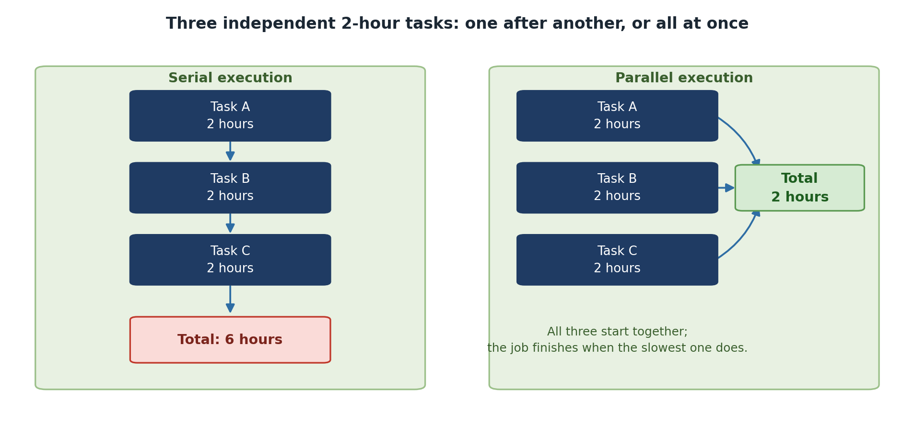

Why Parallel Computing?
Last updated on 2026-08-27 | Edit this page
Overview
Questions
- When should I parallelize my code?
- What is speedup and how do I measure it?
- What is the difference between wall clock time and CPU time?
Objectives
- Understand the difference between serial and parallel execution
- Learn about speedup and efficiency metrics
- Distinguish between wall clock time and CPU time
The Serial Computing Assumption
Processor speeds have plateaued around 3-4 GHz. The solution? Parallelism: doing multiple things at once.
Serial vs. Parallel Execution
Serial execution (one task at a time):
Task A: [===========]
Task B: [===========]
Task C: [===========]
Total time: 30 secondsParallel execution (on 3 processors):
Task A: [===]
Task B: [===]
Task C: [===]
Total time: 10 secondsParallelism trades computational work across multiple processors to reduce wall clock time.

Understanding Speedup and Efficiency
Speedup
\[S_p = \frac{T_1}{T_p}\]
Where \(T_1\) = time on 1 processor and \(T_p\) = time on p processors.
Example: Serial time 100s, parallel time on 4 cores 30s: \(S_4 = 100/30 = 3.33\)
Wall Clock Time vs. CPU Time
CPU time = sum of compute time across all cores. Wall clock time = actual elapsed time the user experiences.
1 core: [============================] 100s wall time, 100 CPU seconds
4 cores: [========] 30s wall time, 120 CPU seconds (100s compute + 20s overhead)If parallelism is working, wall clock time decreases even if total CPU time increases slightly.
When Parallelism Helps (and When It Doesn’t)
Parallelism Helps When: - The problem is genuinely parallel (independent data points, loosely coupled) - The parallelizable fraction is high (> 80% of execution time) - Communication overhead is small relative to computation - Wall clock time reduction matters to you
Parallelism Does NOT Help When: - Code is inherently serial (long dependency chains) - Communication overhead exceeds computation benefit - Serial fraction is large (> 20%) - Code already completes in seconds
Challenge
Analyzing a Workload
You have a program: reading a file takes 50s (serial), processing takes 50s (parallelizable), writing output takes 10s (serial). Total: 110s. With 4 processors, how fast can it go?
Serial fraction = (50 + 10) / 110 = 55%. Only the 50s processing can be parallelized.
Best case: 50 + 50/4 + 10 = 72.5 seconds. Speedup: 110/72.5 = 1.52x.
Only 52% speedup – the effort may not be worth it. Better to optimize I/O first.
- Parallel computing trades computational resources to reduce wall clock time
- Speedup and efficiency quantify parallel performance
- Profile and measure before parallelizing
- Not all problems benefit from parallelism